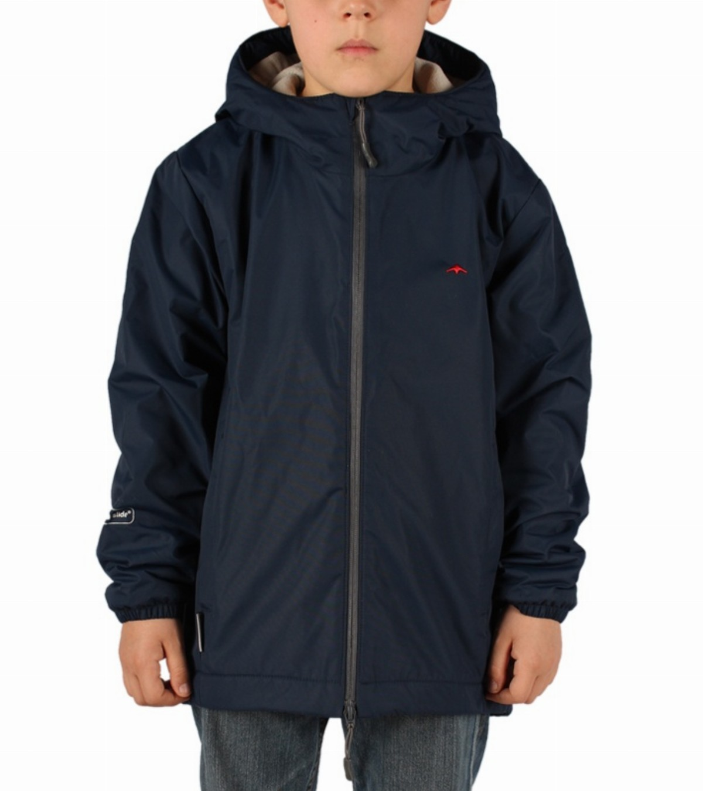
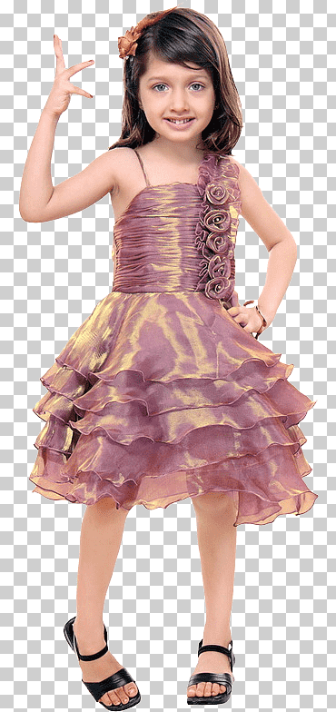

Kids Power
La campera Denim es denim con lavado stonewash y localizado. Su corte es a la cintura y tiene botones metálicos en el frente de fácil encaje. Los talles de la campera Denim van del M al L, para bebés entre 6 meses hasta un año. ¡La campera denim es un clásico de siempre!
El enterito Margot es de jersey de algodón y tiene elastano, que te asegura flexibilidad y comodidad. Es corto, de color rojo, con volados y bolsillos. a un precio promocional de $2950 Tiene elástico interno en la cintura y broches aro, a presión, en la espalda para ajustarlo. Los talles del enterito Margot van del 1 al 3, para edades entre un año hasta los 3 años. ¡Con el enterito Margo va a estar siempre cómoda! Te recomendamos buscar la etiqueta con las indicaciones de lavado, en el interior de la prenda. Así vas a proteger su ropa y podrá usarla durante más tiempo.
El buzo Strippes es de algodón y tiene elastano, que te asegura flexibilidad y comodidad. Es manga larga y multicolor. Su cuello es ribb, con material elástico y resistente. En la espalda tiene broches capsula, para ajustarlo con facilidad. Los talles del buzo Strippes van del XS al L, para bebés entre un mes hasta los 12 meses. Te recomendamos buscar la etiqueta con las indicaciones de lavado, en el interior de la prenda. Así vas a proteger su ropa y podrá usarla durante más tiempo
 